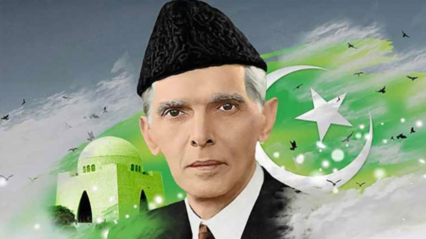

-
The Early Life and Influences (1876-1904)
Muhammad Ali Jinnah was born on December 25, 1876, in Karachi, then part of British India. His family belonged to the Ismaili Khoja community, a Muslim sect within Shia Islam. While details remain debated, Jinnah likely converted to Sunni Islam during his youth. His father, Jinnahbhai Poonja, was a successful merchant who instilled in him the value of hard work and discipline. Jinnah received his early education at the Sindh Madressat-ul-Islam and the Christian Mission School in Karachi. These institutions exposed him to a diverse range of subjects and cultures, shaping his intellectual curiosity and tolerance for different viewpoints. In 1887, at the young age of 11, Jinnah was sent to Bombay (present-day Mumbai) to pursue his higher education. Life in Bombay proved transformative for Jinnah. He thrived in the bustling metropolis, honing his debating skills and developing an interest in politics. In 1893, at the age of 16, Jinnah left for England to study law at Lincoln's Inn in London. While in England, he was deeply influenced by Western political thought and legal principles. He was called to the Bar in 1896, returning to Bombay a qualified barrister ready to embark on a successful legal career. -
From Lawyer to Politician: The Quest for Hindu-Muslim Unity (1905-1913)
Jinnah quickly established himself as a brilliant lawyer, known for his sharp intellect and persuasive arguments. He argued cases across India, earning a reputation as one of the most sought-after legal minds of his time. However, Jinnah's ambitions went beyond the courtroom. He was drawn to the growing Indian nationalist movement and joined the Indian National Congress in 1906. The Congress, led by figures like Mahatma Gandhi, advocated for self-rule for India from British colonial rule. Jinnah, a firm believer in Hindu-Muslim unity, envisioned a united, self-governing India where both communities could flourish. He actively participated in Congress activities and worked towards bridging the communal divide. Jinnah's efforts culminated in the Lucknow Pact of 1916. This agreement, brokered by Jinnah, aimed to address Muslim political concerns within a united India. The pact granted separate electorates for Muslims in provincial legislatures, a crucial concession that recognized the distinct political identity of Muslims. -
Disillusionment and the Rise of the Muslim League (1913-1940)
Despite his efforts, Jinnah became increasingly disillusioned with the Congress. The rise of Hindu nationalism within the party and the growing Hindu-Muslim tensions caused him great concern. He witnessed firsthand how Muslim political aspirations were being sidelined. This disillusionment led him to shift his focus towards the Muslim League, a party that specifically advocated for Muslim rights and interests. Jinnah formally joined the Muslim League in 1913. However, it wasn't until the 1920s that he emerged as its undisputed leader. During this period, he spearheaded a two-pronged strategy. First, he worked to revitalize the Muslim League, transforming it from a loosely organized group to a more disciplined and politically potent force. Second, he tirelessly advocated for Muslim political rights, both within the British Raj and vis-à-vis the Hindu majority. -
The Demand for Pakistan: The Lahore Resolution and Beyond (1940-1947
he 1930s witnessed a critical turning point in Jinnah's political vision. Witnessing the continued marginalization of Muslims and the rise of Hindu dominance within a united India, Jinnah began to advocate for a separate Muslim homeland. This concept gained momentum in the late 1930s, culminating in the historic Lahore Resolution of 1940. The Lahore Resolution, passed by the All-India Muslim League, formally demanded the creation of a separate, independent Muslim state in the northwestern and eastern regions of British India. This marked a decisive shift in Jinnah's and the Muslim League's political strategy. The demand for Pakistan, as the new nation was envisioned, became the central rallying cry for Muslims across India. -
The Turbulent Path to Independence and the First Governor-General (1947-1948)
The years leading up to independence were marked by intense political negotiations and growing communal unrest. Jinnah skillfully led the Muslim League, garnering widespread Muslim support for Pakistan. He faced stiff opposition from both the British government, which preferred a united India, and the Indian National Congress, -
A Life Cut Short: The Cause of Jinnah's Death
Unfortunately, Jinnah had been battling tuberculosis for several years. He had kept his illness largely private, focusing all his energy on the struggle for Pakistan and its subsequent nation-building. The pressures of leadership and the monumental task of guiding a new nation undoubtedly exacerbated his health condition. Despite valiant efforts to regain his health, Jinnah passed away on September 11, 1948, in Karachi. His death, just over a year after Pakistan's independence, plunged the nation into mourning. The leader who had dreamt of Pakistan and led the movement to its fruition was no more. -
A Legacy Enduring: The Quaid-e-Azam's Enduring Influence
Muhammad Ali Jinnah's life and legacy remain deeply intertwined with the history of Pakistan. He is revered as Quaid-e-Azam (Great Leader) and Baba-e-Qaum (Father of the Nation). His unwavering determination, political acumen, and commitment to the cause of Muslims continue to inspire generations of Pakistanis. Jinnah's death, though a tragic loss, did not diminish his monumental role in shaping the course of South Asian history. He left behind a legacy of a nation built on the principles of Muslim self-determination and Islamic identity. The story of Quaid-e-Azam remains a powerful reminder of leadership, vision, and the enduring impact a single individual can have on the course of history.